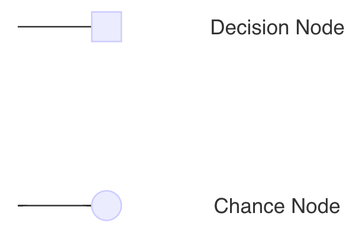
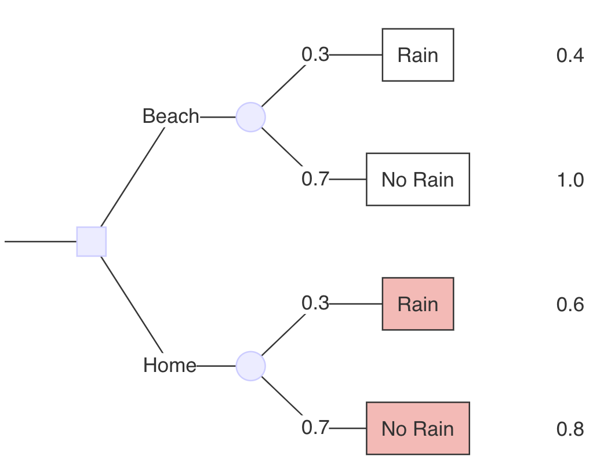

Árboles de decisión y probabilidades
Objetivos de aprendizaje y esquema
Objetivos de aprendizaje
Construir y resolver un problema de decisión calculando el el valor esperado de una intervención entre estrategias competidoras en un árbol de decisión
Determinar el umbral de decisión en una serie de escenarios
Diferenciar entre probabilidades conjuntas y condicionales y demostrar su uso en árboles de decisión
Esquema
- Estructura
- Revisión de probabilidades
- Probabilidades en los árboles de decisión
- Ventajas/limitaciones de los árboles de decisión
La estructura de un análisis de decisión
Recapitulación: Análisis de decisión
Tiene como objetivo informar la elección bajo incertidumbre utilizando un enfoque explícito y cuantitativo
Tiene como objetivo identificar, medir y valorar las consecuencias de las decisiones (riesgos/beneficios) y la incertidumbre cuando hay que tomar una decisión adecuada a lo largo del tiempo
¿Debo ir a la playa o quedarme en casa?
¿Debo ir a la playa o quedarme en casa?
Posibles estados del mundo:
- En la playa sin lluvia.
- En la playa con lluvia.
- En casa sin lluvia.
- En casa con lluvia.
¿Debería ir a la playa o quedarme en casa?
Consideraciones:
- Probabilidad de lluvia
- Mi bienestar general cuando
- En la playa sin lluvia.
- En la playa con lluvia.
- En casa sin lluvia.
- En casa con lluvia.
¿Debería ir a la playa o quedarme en casa?
Consideraciones:
- Probabilidad de lluvia –> probabilidades
- Mi bienestar general cuando
- En la playa sin lluvia.
- En la playa con lluvia.
- En casa sin lluvia.
- En casa con lluvia.
¿Debería ir a la playa o quedarme en casa?
Consideraciones:
- Probabilidad de lluvia –> probabilidades
- Mi bienestar general cuando
- En la playa sin lluvia. –> probabilidades
- En la playa con lluvia. –> En casa sin lluvia.
- En casa sin lluvia. –> En casa sin lluvia.
- En casa con lluvia. –> En casa con lluvia.
Árboles de decisión
- Un nodo de decisión cuadrado indica un punto de decisión entre opciones alternativas.
- Un nodo de azar circular indica un punto en el que son posibles dos o más alternativas al azar.
Árboles de decisión
- Un nodo de decisión cuadrado indica un punto de decisión entre opciones alternativas.
- Un nodo de azar circular indica un punto en el que son posibles dos o más alternativas al azar.

Árboles de decisión
- Las ramas son secuencias de sucesos mutuamente excluyentes y son las rutas a través del árbol.
- Las probabilidades muestran la probabilidad de que ocurra un suceso concreto en un nodo de azar.
¿Debería ir a la playa o quedarme en casa?
Árbol de decisión:

Probabilidad de lluvia = 30%
¿Debería ir a la playa o quedarme en casa?
Árbol de decisión:

¿Debería ir a la playa o quedarme en casa?
Payoffs
| Escenario | Payoff |
|---|---|
| En la playa, sin lluvia 1,0 | |
| En la playa, lluvia 0,4 | |
| En casa, sin lluvia 0,8 | |
| En casa, lluvia 0,6 |
En la playa, no llueve > En casa, no llueve > En casa, llueve > En la playa, llueve
¿Debo ir a la playa o quedarme en casa?
Árbol de decisión:
¿Cuál es el valor esperado de ir a la playa?
\color{verde}{0,82} = \color{rojo}{0,3} * \color{blue}{0.4}}_{\text{Rain}} + \underbrace {color{rojo} {0,7} * \color{azul} {1,0} {{texto{sin lluvia}}
- Probabilidades en rojo.
- Pagos en azul.
- Valor esperado en verde.

¿Cuál es el valor esperado de quedarse en casa?
0,74 = 0,3. }_{} + …rojo, 0,7… …sin lluvia…
- Probabilidades en rojo.
- Pagos en azul.
- Valor esperado en verde.

Playa
EV(Beach)=0.82 > EV(Home)=0.74
Valores esperados
- Valor esperado = La suma de las probabilidades multiplicadas para cada opción de azar o intervención

Valores Esperados
El valor esperado en el contexto de los árboles de decisión son los “payoffs” ponderados por sus probabilidades precedentes
Lo que obtenemos es: el resultado que se espera EN PROMEDIO para cualquier alternativa de decisión (por ejemplo, duración de la vida, calidad de vida, costo de vida)
- Ejemplo: Por término medio, los pacientes que reciban el tratamiento A vivirán 0,30 años más que los pacientes que reciban el tratamiento B
Maximizar el valor esperado es un criterio razonable de elección ante perspectivas inciertas; aunque no necesariamente promete los mejores resultados para un individuo.
Determinación del umbral de decisión
¿A qué probabilidad p son iguales las dos opciones?
Supongamos que queremos saber a qué probabilidad de lluvia p estaríamos indiferentes entre ir a la playa o quedarnos en casa…
Escribe la ecuación para cada elección utilizando una variable, p, para la probabilidad en cuestión
Establece las ecuaciones iguales entre sí y resuelve para p.
¿A qué probabilidad p son iguales las dos opciones?
Playa: 0.82 = 0.3 x 0.4 + 0.7 x 1.0
Casa: 0.74 = 0.3 x 0.6 + 0.7 x 0.8
¿A qué probabilidad p son iguales las dos opciones?
{underbrace{0.3 * 0.4 + 0.7 * 1.0}_{\text{Playa}} = \underbrace{0.3 * 0.6 + 0.7 * 0.8}_{\text{Casa}}
¿A qué probabilidad p son iguales las dos opciones?
Sustituya la probabilidad de lluvia por P y 1-P y resuelva para “P”
p * 0.4 + (1-p) * 1.0 = p * 0.6 + (1-p) * 0.8
\underbrace{0,3 * 0,4 + 0,7 * 1,0}_{texto{Playa}} = \underbrace{0,3 * 0,6 + 0,7 * 0,8}_{texto{Casa}}
¿A qué probabilidad p son iguales las dos opciones?
p * 0.4 + (1-p) * 1.0 = p * 0.6 + (1-p) * 0.8
¿A qué probabilidad p son iguales las dos opciones?
p * 0.4 + (1-p) * 1.0 = p * 0.6 + (1-p) * 0.8
0,4p + 1-p = 0,6p + 0,8 - 0,8p
1-0,6p = 0,8 - 0,2p
1-0,8 = 0,6p - 0,2p
0.2 = 0.4 * p
0.5 = p
¿A qué probabilidad p son iguales las dos opciones?
Cuando la probabilidad de lluvia es del 50% TANTO en la playa como en casa, dado cómo hemos ponderado los resultados, ir a la playa sería lo mismo que quedarse en casa
En otras palabras, usted sería indiferente entre los dos – permanecer en casa o ir a la playa
¿A qué probabilidad (p_B) de lluvia para la playa estaríamos indiferente entre las dos opciones?
¿A qué probabilidad (p_B) de lluvia para la playa estaríamos indiferente entre las dos opciones?
Antes hemos calculado el beneficio esperado de quedarse en casa: 0,74 (que era un valor esperado menor que ir a la playa cuando la probabilidad de lluvia en ambos era del 30%)
¿Cuál tendría que ser** p_B para obtener una recompensa esperada en la playa playa de 0,74?
- En otras palabras, ¿con qué probabilidad de lluvia en la playa ¿le resultaría indiferente quedarse en casa o ir a la playa?
¿A qué probabilidad (p_B) de lluvia para la playa estaríamos indiferente entre las dos opciones?
Fije 0,74 (valor esperado de quedarse en casa) igual a la playa y resuelva para p_B.
pB * 0.4 + (1 - pB) * 1.0 = 0.74
¿A qué probabilidad (p_B) de lluvia para la playa estaríamos indiferente entre las dos opciones?
pB * 0.4 + (1 - pB) * 1.0 = 0.74
pB * 0.4 + 1 - pB = 0.74
¿A qué probabilidad (p_B) de lluvia para la playa estaríamos indiferente entre las dos opciones?
pB * 0.4 + 1 - pB = 0.74
pB * -0.6 = -0.26
¿A qué probabilidad (p_B) de lluvia para la playa estaríamos indiferente entre las dos opciones?
pB * -0.6 = -0.26
pB = -0.26 / -0.6 = 0.43
¿A qué probabilidad (p_B) de lluvia para la playa estaríamos indiferente entre las dos opciones?
Cuando la probabilidad de lluvia en la playa es del 43% (la probabilidad de lluvia en casa se mantiene en el 30%), nos resulta igual quedarnos en casa e ir a la playa.
Si la probabilidad de que llueva en la playa es > > del 43%, nos quedaríamos en casa.
Revisión de Probabilidades
Probabilidades en Árboles de Decisión
Eventos mutuamente excluyentes
- 2 cosas que no pueden ocurrir juntas (un suceso no puede ocurrir al mismo tiempo que el otro)
- Ejemplo: 2 sucesos, sobrevivir o morir; mutuamente excluyentes porque una persona no puede ser ambas cosas a la vez
- Ejemplo: 2 sucesos, curado o no curado
Probabilidades dentro de los árboles de decisión
Sucesos mutuamente excluyentes
Probabilidades dentro de los árboles de decisión
Sucesos mutuamente excluyentes
- Suponiendo que los sucesos sean mutuamente excluyentes, la probabilidad de que ocurran 2 sucesos es la suma de las probabilidades de que cada suceso ocurra individualmente
P(A o B) = P(A) + P(B)
Probabilidades en árboles de decisión
Probabilidad conjunta
P(A y B): La probabilidad de que dos eventos ocurran al mismo tiempo.
Probabilidad condicional
P(A|B): La probabilidad de un suceso A dado que se sabe que ha ocurrido un suceso B.
Probabilidades
- Desplazándose de izquierda a derecha, las primeras probabilidades del árbol muestran la probabilidad de un suceso.
- Las probabilidades siguientes son condicionales.
- La probabilidad de un suceso dado que un suceso anterior ocurrió o no ocurrió.
- Al multiplicar las probabilidades a lo largo de los caminos se calcula la probabilidad del camino que es una probabilidad conjunta.
Caminos
- Caminos = secuencia de acontecimientos que conducen a un “pago” posterior
- En otras palabras, una secuencia de acontecimientos conduce a un resultado/consecuencia, o recompensa
- Ejemplo: Nuestro ejemplo de la playa tiene 4 caminos.
Caminos
- Camino A: Esta persona va a la playa pero llueve
- Camino B: Esta persona va a la playa pero no llueve
Probabilidad condicional
Ejemplo: ¿Cuál es la probabilidad condicional de muerte dentro de un año de nacimiento, dado que el bebé tiene una madre fumadora?
(Probabilidad de que ocurra un suceso (B) dado que ha ocurrido otro suceso (A))
P(A|B) = P(A y B) / P(B)
Probabilidad condicional, revisión 2x2
¿Cuál es la probabilidad condicional de muerte dentro de un año de nacer, dado que el bebé tiene una madre fumadora?

*A= muerte en el primer año; B= madre fumadora.
P(A|B) = 16.712 / (1.197.142 + 16.712)
= 14 por cada 1.000 nacimientos
Probabilidad condicional, revisión 2x2
O, si quisiéramos utilizar la ecuación de probabilidad condicional
P(A|B) = P(A y B)/P(B)
*A= muerte en primer año; B=madre fumadora
P(A y B) = 16.712 / 4.111.059 = 0,0041
P(B) = 1.213.854/4.111.059 = 0,295
P(A|B) = 0.0041/0.295 = 0.014
Probabilidad condicional, 2x2 revisión
Probabilidad de A|B es diferente de la de B|A
Si A = muerte en el primer año; B=bebé con peso normal al nacer, entonces la probabilidad condicional de P(A|B) = la probabilidad de muerte del niño dado que el niño tiene un peso normal al nacer
Probabilidad condicional, revisión 2x2
¿Cuál es la probabilidad condicional de muerte de un bebé, dado que el niño tiene un peso normal al nacer
Si A = muerte en el primer año; B=niño con peso normal al nacer
P(A|B) = 14.442 / (14.442+ 3.804.294)
= 3,8 muertes por cada 1.000 nacimientos
Probabilidad condicional, revisión 2x2
O, si quisiéramos utilizar la ecuación
P(A|B) = P(A y B)/P(B)
P(A y B) = 14,442
P(B) = 3.818.736
P(A|B) = 14,442/3,818,736 = 0.0038
Probabilidad condicional, revisión 2x2
Por otra parte, la probabilidad condicional de P(B|A) es la probabilidad de que un bebé tenga un peso normal al nacer, dado que el murió en el primer año
B=bebé con peso normal al nacer; A = muerte en el primer año.
Probabilidad condicional, revisión 2x2
Resuelve P(B|A) – la probabilidad de que un infante tuviera peso normal al nacer dado que el bebé murió en el primer año
P(B|A) = 14,442 / (14,442+ 21,054) = 0.41
Otros conceptos del análisis de decisiones
Filosofías de decisión
Maximizar el valor esperado es un criterio razonable de elección dadas perspectivas inciertas; aunque no necesariamente promete los mejores resultados para cualquier individuo.
El arrepentimiento Mini-max
Utilidad máxima
Utilidad esperada
Filosofías de decisión
Maximizar el valor esperado es un criterio razonable de elección dadas perspectivas inciertas; aunque no necesariamente promete los mejores resultados para cualquier individuo.
El arrepentimiento Mini-max
- Nunca vayas a la playa si haya posibilidad de lluvia.
Utilidad máxima
Utilidad esperada
Filosofías de decisión
Maximizar el valor esperado es un criterio razonable de elección dadas perspectivas inciertas; aunque no necesariamente promete los mejores resultados para cualquier individuo.
- El arrepentimiento Mini-max
- Nunca vayas a la playa si haya posibilidad de lluvia.
- Utilidad máxima
- Ir siempre a la playa a menos que llueva al 100%.
- Utilidad esperada
Filosofías de decisión
Maximizar el valor esperado es un criterio razonable de elección ante perspectivas inciertas; aunque no necesariamente promete los mejores resultados para cualquier individuo.
- El arrepentimiento Mini-max
- Nunca vayas a la playa si haya posibilidad de lluvia.
- Utilidad máxima
- Ir siempre a la playa a menos que llueva al 100%.
- Utilidad esperada
- Depende del clima.
Notas (4) Si vas a basar tu decisión en la utilidad esperada, entonces depende del clima y del valor que le des a ciertos resultados – este es el enfoque del pensador racional – cuánto valoras la pérdida de utilidad de no disfrutar de la playa, y la experiencia de ir a la playa, por ejemplo. :::
Payoffs
- A cada estado del mundo se le asigna un costo o resultado.
- Nuestro objetivo suele ser calcular el valor esperado de estos resultados.
- En las próximas sesiones profundizaremos en las teorías y marcos que subyacen a los distintos resultados
Fortalezas/limitaciones de los árboles de decisión
Ventajas
- Son fáciles de describir y entender
- Funcionan bien con un horizonte temporal limitado
- Los árboles de decisión son un marco potente para analizar decisiones y pueden proporcionar perspectivas rápidas/útiles, pero tienen limitaciones.
Limitaciones
- No toman en cuenta explícitamente el paso del tiempo.
- Los sucesos recurrentes deben incorporarse por separado al modelo.
- Está bien para ciclos de tiempo cortos (por ejemplo, 12 meses), pero a menudo queremos modelizar a lo largo de toda la vida.
- Es difícil incorporar detalles clínicos reales. La estructura de árbol puede volverse compleja rápidamente.
Avance de lo que está por venir

- ¡Un árbol más complejo!